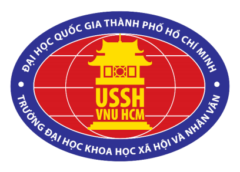

Hành trình 30 năm tìm đường cứu nước của Chủ tịch Hồ Chí Minh


Sinh ra, lớn lên trong một gia đình nhà nho yêu nước, nơi quê hương giàu truyền thống cách mạng, chứng kiến bao cảnh đau thương nước mất, nhà tan, Nguyễn Tất Thành ra đi tìm đường cứu nước, cứu dân khi mới 21 tuổi. Từ lúc còn nhỏ, Người sớm được tiếp cận với các tư tưởng lớn của phương Đông, hấp thụ vốn văn hóa truyền thống của dân tộc, Hán học và bước đầu tiếp xúc với văn hóa phương Tây. Vốn có tư chất thông minh, tinh thần ham học hỏi, khả năng tư duy độc lập, tính ham hiểu biết và nhạy cảm với cái mới, Người bị lôi cuốn bởi khẩu hiệu “Tự do, bình đẳng, bác ái” và thôi thúc bởi ý định tìm hiểu “cái gì ẩn dấu sau” những từ đẹp đẽ đó ở chính nước sinh ra khẩu hiệu đó. Những tư tưởng tiến bộ của cuộc cách mạng ở Pháp năm 1789, thành tựu văn minh, tiến bộ của nhân loại ở Pháp và các nước châu Âu khác đã thúc đẩy Người muốn đến tận nơi tìm hiểu. Đó chính là những lý do Nguyễn Tất Thành quyết định chọn nước Pháp, chọn châu Âu làm điểm đến đầu tiên trong cuộc hành trình đi tìm đường cứu nước năm 1911. Chính cuộc hành trình đầy gian nan, vất vả ấy đã giúp Người tìm đến với chủ nghĩa Mác- Lênin như một lẽ tất yếu lịch sử và nhận ra ở đó con đường đấu tranh giải phóng dân tộc, giải phóng giai cấp và giải phóng con người.
Hành trang ban đầu của Nguyễn Tất Thành khi ra nước ngoài là vốn tri thức về văn hóa phương Đông và phương Tây, lòng yêu nước nhiệt thành, tiếp thu có chọn lọc con đường cứu nước của các nhà yêu nước lớp trước và một dự định lớn lao, đó là “xem nước Pháp và các nước khác, sau khi xem xét họ làm như thế nào, tôi sẽ trở về giúp đồng bào ta” đó là dự định tìm con đường cứu nước, cứu dân.
Có thể nói, đầu thế kỷ XX, Hồ Chí Minh là một trong số rất ít các nhà cách mạng đương thời có điều kiện đi nhiều (do làm bồi tàu, thủy thủ), có một vốn hiểu biết khá tường tận về chủ nghĩa đế quốc và hệ thống thuộc địa của chúng. Gần 10 năm, vừa lao động kiếm sống, vừa tiến hành khảo sát thực tiễn nhiều nước tư bản và các nước thuộc địa, khảo sát các cuộc cách mạng ở các nước Pháp, Anh, Mỹ… Nguyễn Tất Thành đã có nhận thức quan trọng là: Cách mạng tư sản (CMTS) là những cuộc cách mạng vĩ đại, nhưng là những cuộc cách mạng chưa đến nơi. Nó đã phá tan gông xiềng phong kiến cùng những luật lệ hà khắc và những ràng buộc vô lý để giải phóng sức lao động của con người. CMTS dựng lên một chế độ mới tiến bộ hơn xã hội phong kiến. Nhưng cách mạng xong rồi dân chúng vẫn khổ, vẫn bị áp bức, bóc lột và vẫn ấp ủ mong muốn làm cách mạng. Từ đó, Người đi tới kết luận, chúng ta đổ xương máu để làm cách mạng thì không đi theo con đường cách mạng này. Nguyễn Tất Thành đã tìm ra những mặt trái của xã hội phương Tây, nhận ra “ Ở đâu cũng có người nghèo khổ như xứ sở mình” do ách áp bức, bóc lột dã man, vô nhân đạo của bọn thống trị. Điều đó đã giúp Người có một nhận thức quan trọng: Nhân dân lao động trên toàn thế giới cần đoàn kết lại để đấu tranh chống kẻ thù chung là giai cấp thống trị; cùng nhau thực hiện nguyện vọng chung là độc lập, tự do.